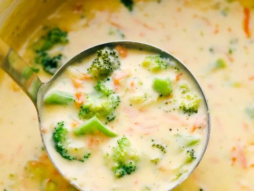

Broccoli and Cheddar Soup

Description:
Broccoli and cheddar soup is my favorite meal of all time. Seriously I make a mean broccoli and cheddar soup
This is not my recipe that information is classified and no one will ever know it
Golly I love soup
Especially broccy cheddy soup.
Ingridients:
- 1 tablespoon melted butter
- 1/2 medium chopped onion
- 1/4 cup melted butter
- 1/4 cup flour
- 2 cups half-and-half cream
- 2 cups chicken stock
- 1/2 lb fresh broccoli about 1 cup
- 1 cup carrot julienned
- 1/4 teaspoon nutmeg
- 8 ounces grated sharp cheddar cheese
- salt and pepper to taste
Directions:
- Sauté the onion in 1 tablespoon melted butter and set aside. In a large pot whisk together the melted butter and flour over medium heat for about 3-4 minutes.
- Slowly whisk in the half and half and chicken stock. Let it simmer for about 20 minutes.
- Add the broccoli, carrots, and onions. Let them simmer on medium low for about 25 minutes until the broccoli and carrots are tender.
- Add nutmeg, salt and pepper and sharp cheddar cheese. Let the cheese melt and then serve. For a smoother soup puree it!